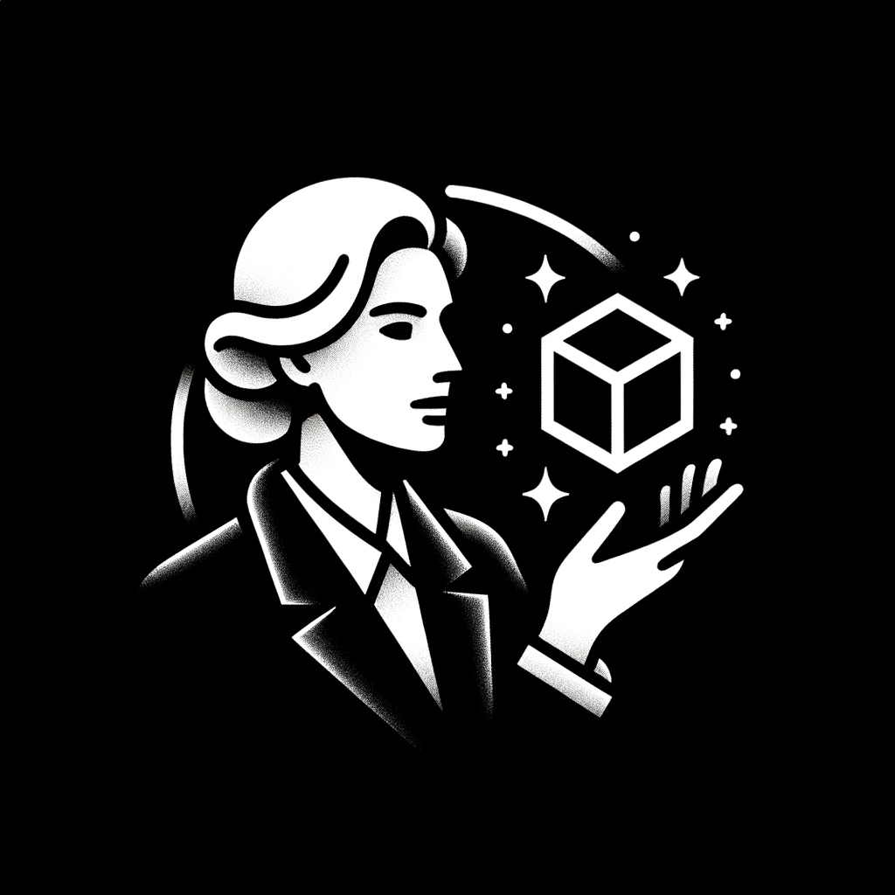

WebGL version:
Debug mode:
Antialiasing:
Stencil:
Power preference:
Extension count:
VAO support:
32-bit index support:
Anisotropy support:
Max anisotropy: 0
Fragment float precision:
Vertex float precision:
Max texture size:
Real ms:
Real fps:
Effective ms:
Effective fps:
Position:
Direction:
Target:
Orientation:
Rotation speed:
Rotation smoothing:
Distance delta multiplier:
Distance smoothing:
Vertical field of view:
Near:
Far:
Aspect ratio:
Hopper Engine
